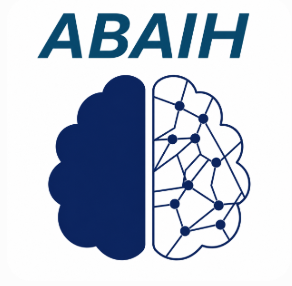

Educate
Practical learning for healthcare professionals
Advance AI literacy through evidence-based education. Help professionals critically assess AI tools and understand their role in clinical practice.
Explore education
American Board of ArtificialEducation. Competency. Responsibility.
Advancing the safe, effective, and responsible use of artificial intelligence in healthcare.
01 / Our mission
The American Board of Artificial Intelligence in Healthcare (ABAIH) advances the safe, effective, and responsible use of AI through practical education, competency standards, and interdisciplinary collaboration.
ABAIH equips healthcare professionals, leaders, and organizations with the knowledge and skills to critically evaluate, thoughtfully integrate, and responsibly oversee AI—improving patient care, strengthening the healthcare workforce, and fostering public trust.
02 / Our work
Building the knowledge, professional competency, and guidance healthcare needs to use AI responsibly.
Advance AI literacy through evidence-based education. Help professionals critically assess AI tools and understand their role in clinical practice.
Explore educationABAIH is developing a certification pathway based on independently assessed knowledge and competency. Certification is not yet available, and course participation alone will not confer professional certification.
Explore certificationBring clinical, technical, and policy expertise together to propose standards and responsible approaches to AI adoption and oversight.
Explore policy & standardsWhat distinguishes our approach
ABAIH brings clinical, research, education, technology, and policy perspectives together to prepare professionals across healthcare to use AI responsibly. Our approach connects practical education with demonstrated competency and responsible implementation in healthcare practice.
Our certification framework calls for independent examination processes, third-party administration and proctoring, and organizational separation between education and certification. Educational participation and professional certification serve distinct purposes.
Our approach
Our educational goal is to prepare healthcare professionals to understand AI, critically evaluate its capabilities and limitations, and thoughtfully integrate it into care. ABAIH plans to offer live, hybrid, and online learning.
ABAIH’s framework distinguishes certificates of completion for educational activities from professional certification based on independently assessed competency. The certification model calls for independent examination development and third-party administration and proctoring, with education kept organizationally separate from certification.
Certification remains a development goal. Enrollment and examination details will be shared when available.
ABAIH aims to contribute policies and competency standards that support safe, effective AI use. Interdisciplinary collaboration brings the needs of patients, healthcare professionals, and organizations into that work.
03 / Our board
Meet the clinicians, researchers, educators, and healthcare leaders guiding ABAIH’s work.
Board co-chair
AI education & professional competency
Professor of Clinical Sciences, Roseman University
Orest B. Boyko, MD, PhD is a physician educator, radiologist, and national leader in artificial intelligence education for healthcare professionals. His work focuses on preparing physicians, medical students, and healthcare organizations to safely, effectively, and responsibly integrate AI into clinical practice.
Dr. Boyko serves as Professor of Clinical Sciences at Roseman University College of Medicine, where he develops and teaches AI curricula for undergraduate and graduate medical education, mentors student AI research, and leads educational initiatives that promote AI literacy, critical appraisal of AI technologies, and responsible clinical implementation.
Beyond the academic setting, Dr. Boyko collaborates with healthcare organizations, academic institutions, and industry leaders to advance AI competency, governance, certification, and workforce development.
He is a Co-Founder of the American Board of Artificial Intelligence in Medicine (ABAIM) and the American Board of Artificial Intelligence in Healthcare (ABAIH), organizations dedicated to establishing standards for AI education and professional competency across healthcare disciplines. He also serves as a member of the University of Toronto T-CAIREM International AI in Medicine Education Working Group, where he contributes to international efforts in AI curriculum development and educational standards.
With decades of experience in radiology, medical education, and healthcare innovation, Dr. Boyko is committed to advancing evidence-based AI education, fostering interdisciplinary collaboration, and preparing the next generation of healthcare professionals to lead the responsible adoption of artificial intelligence.
Board co-chair
Medical devices & digital radiology
Vice President & Head of Medical Affairs, Bayer
Ankur Sharma, MD is Vice President and Head of Medical Affairs for Medical Devices and Digital Radiology at Bayer, where he leads efforts to advance the clinical adoption of AI-enabled imaging technologies and digital health solutions. His expertise spans artificial intelligence, medical devices, regulatory science, and digital innovation, with a focus on translating emerging technologies into safe, effective, and evidence-based clinical practice.
Dr. Sharma collaborates with healthcare providers, researchers, regulators, and industry leaders to address AI governance, data privacy, interoperability, and regulatory frameworks. He is an advocate for responsible AI implementation and the development of policies that accelerate innovation while maintaining patient safety, clinical quality, and trust in healthcare. Dr. Sharma has been a national speaker on AI and has organized numerous AI educational initiatives at major medical meetings.
AI governance & responsible innovation
Chief Innovation Officer, Rad AI
Demetri Giannikopoulos is Chief Innovation Officer at Rad AI and a national leader in healthcare artificial intelligence, AI governance, and responsible innovation. He works with healthcare organizations, industry leaders, and academic collaborators to advance trustworthy, human-centered AI through governance, education, and clinical implementation. His leadership spans radiology, cardiology, critical care, and enterprise clinical operations, where he works to align innovation with patient safety, clinical quality, operational excellence, and measurable healthcare outcomes.
His contributions include leadership with the Coalition for Health AI (CHAI), development of the BRIDGE Guidelines, participation on URAC's Health Care AI Advisory Committee, service on the American College of Radiology's Patient and Family Centered Care Quality Experience Committee, and advocacy as a PCORI Ambassador. His work focuses on building transparent, explainable, and patient-centered AI that improves healthcare quality and outcomes.
Biomedical data science & AI education
Data scientist, educator & healthcare researcher
Jamie L. Fairclough, PhD, MPH, MS is a data scientist, educator, and healthcare researcher specializing in artificial intelligence, biomedical data science, machine learning, and health analytics. She serves as Director of Mental Health Evaluation and Assessment and is a VA researcher at the VA Southern Nevada Healthcare System. At Roseman University College of Medicine, she provides strategic leadership in data science, analytics, assessment, and evaluation to support medical education and institutional decision-making.
Dr. Fairclough's research focuses on machine learning, computer vision for medical imaging, AI systems engineering, digital twin modeling, disease surveillance, and spatial epidemiology. She is Co-Chair of the AI Primer for Medical Students and Co-Chair of the Emerging Leaders Interdisciplinary Conference: AI in Healthcare, reflecting her commitment to advancing AI education and interdisciplinary collaboration. With more than 15 years of experience in higher education, government, and healthcare, she continues to lead initiatives that integrate data science, artificial intelligence, and evidence-based evaluation to improve healthcare delivery and medical education.
Medical imaging & trustworthy AI
IBM Fellow, Chief Scientist & Stanford Adjunct Professor
Tanveer Syeda-Mahmood, PhD is an IBM Fellow, Chief Scientist, and Stanford Adjunct Professor recognized as a global leader in artificial intelligence, medical imaging, and multimodal foundation models. Her work focuses on advancing computer vision, healthcare AI, trustworthy AI, and clinical decision support systems, translating cutting-edge research into scalable technologies deployed in real-world healthcare and enterprise environments.
Dr. Syeda-Mahmood has led the development and commercialization of AI innovations that bridge scientific discovery and clinical practice. She also mentors the next generation of AI researchers through Stanford's Biomedical Data Science Program while collaborating with leading clinicians, researchers, industry partners, and healthcare organizations worldwide to advance responsible AI and precision medicine. Dr. Syeda-Mahmood was declared Master Inventor in 2011 and in 2019. She is the recipient of key awards including IBM Corporate Award 2015, Best of IBM Award 2015, 2016 and several outstanding innovation awards.

Accreditation, medical policy & AI strategy
Chief Medical Officer | Radiologist | Healthcare Strategy Advisor
Mark Hiatt, MD, MBA, MS, is a physician executive, cardiovascular radiologist, and founding board member of the American Board of Artificial Intelligence in Healthcare (ABAIH). He serves as Chief Medical Officer of RadSite, a CMS-approved accrediting organization for advanced diagnostic imaging, and as Principal of Hiatt Advisory Services, where he advises healthcare organizations, health plans, diagnostic companies, and medical technology firms on clinical strategy, evidence development, medical policy, reimbursement, market access, and the responsible adoption of artificial intelligence.
Dr. Hiatt’s experience spans clinical practice, payer leadership, precision diagnostics, accreditation, utilization management, and medical affairs. He previously held senior medical leadership roles at Guardant Health, Regence BlueCross BlueShield, HealthHelp, BostonGene, and FrontRunnerHC and completed fellowship training in cardiovascular imaging at Stanford University. Through ABAIH, he supports practical AI education, rigorous competency assessment, and evidence-based approaches to the safe and effective implementation of AI across healthcare.
Healthcare strategy & workforce development
Senior Executive, Western University of Health Sciences
Di Lacey, DHSc is a senior healthcare executive with more than three decades of leadership experience in healthcare strategy, organizational transformation, innovation, and academic medicine. As Senior Executive for Strategy, Growth and Transformation at Western University of Health Sciences, she leads strategic initiatives focused on institutional growth, leadership development, program expansion, and healthcare innovation.
With a clinical background in medical imaging and diagnostic ultrasound, Dr. Lacey has been an early advocate for the adoption of emerging healthcare technologies. Her career has spanned executive leadership in healthcare systems, strategic planning, business development, and academic medicine, including previous leadership roles in strategy and innovation at PeaceHealth.
Dr. Lacey is a founding member of the American Board of Artificial Intelligence in Healthcare (ABAIH) and serves as Co-Advisor for the Artificial Intelligence in Medicine Club at Western University of Health Sciences. She is a strong advocate for responsible and ethical AI adoption in healthcare education and clinical practice. She also serves on the Inteleos POCUS Certification Academy Committee, contributing to national efforts in professional competency, AI education, and workforce development.
Through her leadership, Dr. Lacey continues to advance innovation, interdisciplinary collaboration, and the responsible integration of artificial intelligence to prepare the next generation of healthcare professionals.
Predictive analytics & kidney care
Nephrologist & clinical researcher
Micah Thorp, DO is a nephrologist and clinical researcher specializing in chronic kidney disease, hypertension, predictive analytics, and artificial intelligence in population health. He provides comprehensive care for patients across the spectrum of kidney disease, from early-stage chronic kidney disease to dialysis and kidney transplantation, with a focus on delivering long-term, patient-centered care.
In addition to his clinical practice, Dr. Thorp is a researcher at the Kaiser Permanente Center for Health Research, where he investigates innovative approaches to improving kidney care through predictive modeling and data-driven clinical decision support. His research focuses on translating real-world evidence into clinical practice to improve outcomes and optimize care delivery.
Dr. Thorp has been actively involved in the application of artificial intelligence and machine learning to nephrology, collaborating with Medial EarlySign on initiatives to identify Kaiser Permanente patients most likely to benefit from targeted care interventions. His work reflects a commitment to leveraging AI to advance precision medicine, improve population health, and support proactive, value-based care for patients with kidney disease.
The future we are working toward
ABAIH envisions a future in which AI competency is integral to healthcare practice, supporting safer care, more informed clinical decisions, and better patient outcomes.
Discover our missionLet’s connect
For inquiries about ABAIH’s educational goals, certification development, policy work, or opportunities to collaborate, get in touch.
contact@abaih.orgInterested in future education or certification opportunities? Share your interests and let us know if you would like updates.
Express interestOpens an email to contact@abaih.org. You can review and send your message in your email app.